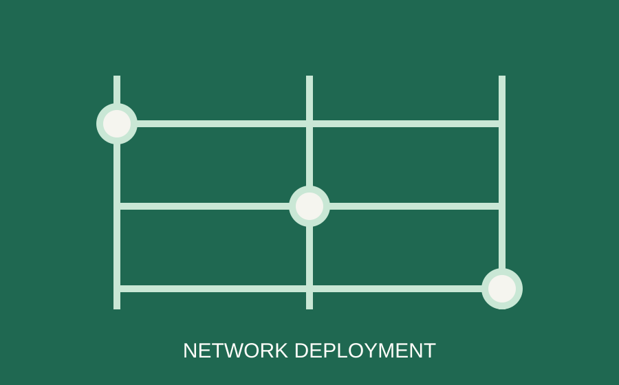

STUDENT PORTFOLIO · LAGOS, NIGERIA
Building dependable systems for a connected world.
AT A GLANCE
Focused on secure, resilient infrastructure.
FEATURED PROJECT
View project details →
LEARN & GROW
A small study soundtrack
Use this placeholder audio control to meet the multimedia requirement. Replace the source when you have an audio file.